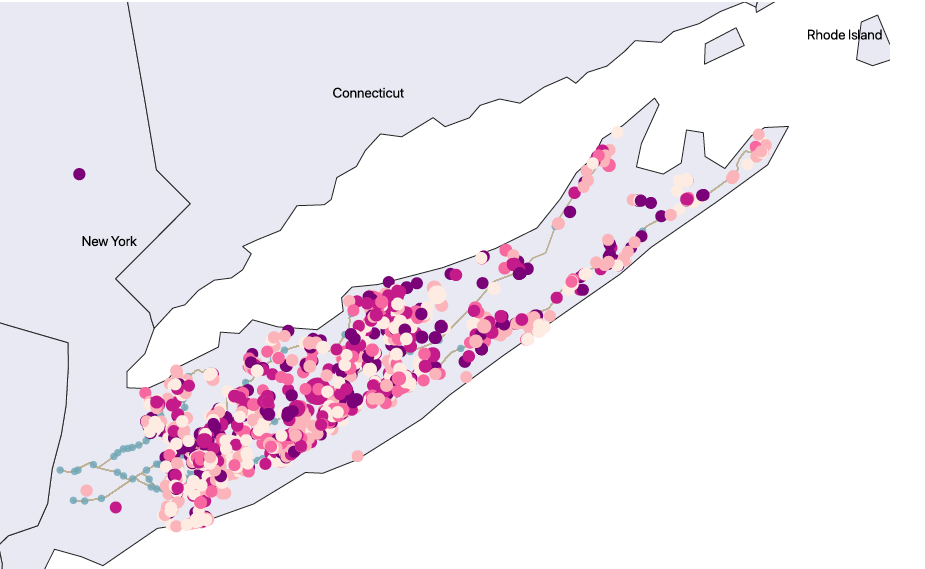

Long Island is bracing to see multiple affordable housing options in the coming years as several projects of this type have been either approved or are under construction. In 2019, five multifamily housing projects were under construction, one proposed and one completed.
Affordable housing in Nassau and Suffolk counties has seen a boom in the past decade, especially picking up pace since 2014. Including the ongoing and proposed projects, a third of the affordable housing units since 1970 were added in the past decade.

These cheaper housing options will likely attract low-income families to Long Island and backstop young adults who might be planning to leave the counties to find cheaper housing options in Queens and Brooklyn.
Overall, the housing market in Long Island has been upbeat with a consistent growth in prices.

During the last five years, the number of projects in Nassau and Suffolk counties together hit a historical high at least since 1970, coming back from 25 years of rather muted growth. Especially, the apartment projects have seen a surge, outpacing condo and cooperative housing construction.
During the seventies and eighties, most of the multifamily housing projects were located closer to Long Island Railroad stations in Nassau County as it falls closer to New York City.
But this trend has changed as more housing projects have come up in the downtown area, away from the Long Island Railroad stations.
A circle of one mile radius drawn around 124 stations of the railroad shows a host of new projects falling outside, meaning before renting or buying an apartment, one has to figure out the best and the cheapest mode of transportation to New York City.
Moreover, the downside to this rise in multifamily housing is the greater need for a sewer system that can handle the pressure of an increased population. It remains to be seen whether Long Island’s sewer system can absorb that extra pressure, especially at a time when there have been growing concerns about the quality of drinking water.